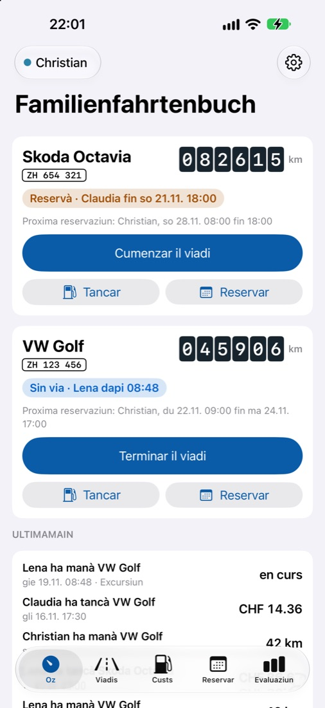
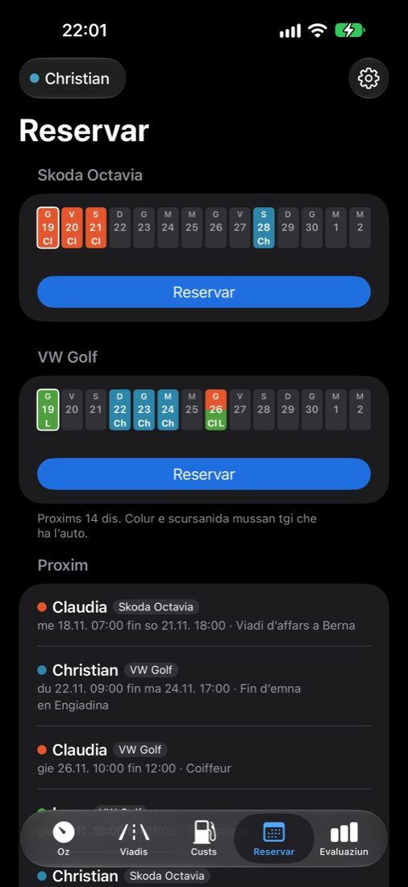
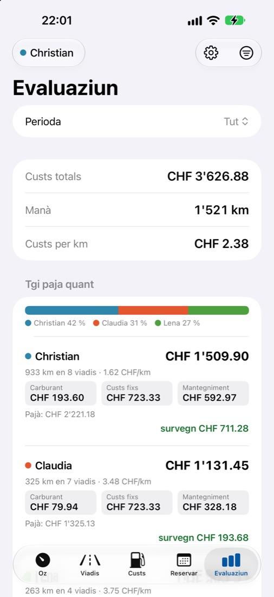
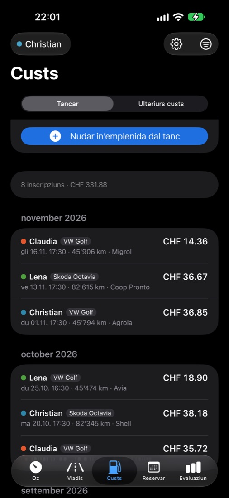
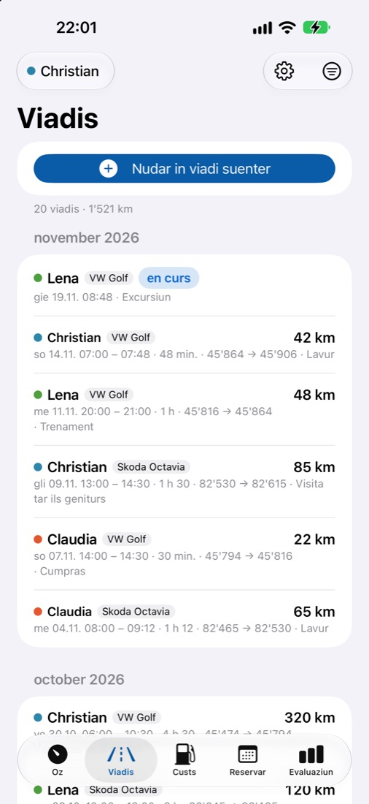
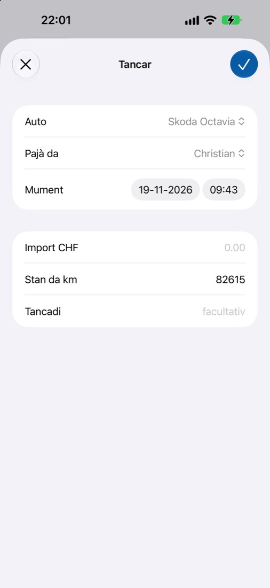

Translatà cun ALAS, il translatur da la Lia Rumantscha, e cun intelligenza artifiziala (IA). Sch’ina formulaziun n’è betg correcta, ans scrivai per plaschair.
Viadis, tancar u chargiar, custs e reservaziuns per ils autos da la famiglia en in lieu, per autos da benzin, diesel, electrics ed ibrids plug-in. L’app reparta ils custs tenor clavs reglablas e mussa tgi che debitescha quant a tgi. Tut ils commembers da la famiglia nudan sin lur agen iPhone, la sincronisaziun va via iCloud.






Maletgs cun datas d’exempel.
Tge che l’app po
- Viadis – Cumenzar e terminar in viadi cun il stan da km u nudar el pli tard. Durant il viadi mussa il visur bloccà la durada dal viadi cun il buttun «Terminar il viadi».
- Tancar e chargiar – Nudar l’import ed il stan da km, er per autos electrics ed ibrids plug-in.
- Ulteriurs custs – Assicuranza, service, reparaturas e tut quai che resulta uschiglio.
- Reservar – Reservar l’auto per ina perioda e vesair l’occupaziun dals proxims 14 dis cun in’egliada. Ina communicaziun arriva, sch’insatgi reserva, sposta u stizza.
- Rendaquint gist – Reparter ils custs per auto e gener da custs: tenor kilometers, en parts egualas u cun parts fixas. L’app mussa tgi che debitescha quant a tgi e cudescha la gulivaziun. Export sco tabella (CSV).
- Per l’entira famiglia – Cundivis via iCloud, mintga persuna cun l’agen iPhone, a scelta cun il dretg da modifitgar u mo da guardar. Tgi che vegn vitiers u sorta e tge autos ch’èn vegnids vendids, quinta l’app endretg.
- Siri e CarPlay – «Fahrt starten mit Fahrtenbuch» funcziuna er en l’auto e cun l’iPhone bloccà (Siri chapescha mo tudestg, franzos e talian).
- Quatter linguas – Tudestg, franzos, talian e rumantsch.
Simpel cun intenziun
Familienfahrtenbuch è fatg per famiglias che cundividan lur autos, betg per firmas u flottas. Perquai na cuntegna el betg mintga funcziun imaginabla, mabain mo quai ch’i dovra propi: tgi ch’è charrà cura, tge ch’è vegnì tancà e pajà, tgi che ha reservà l’auto e co che ils custs vegnan repartids gist a la fin.
Pli pauc, persuenter endretg. Senza conto, senza reclama, senza agen server. Las datas restan en la famiglia.
Dumondas, sbagls u giavischs?
support@familienfahrtenbuch.chDumondas frequentas
Co envid jau insatgi en la famiglia?
En l’app sut Configuraziun → «Envidar la famiglia …» trametter in link, per exempel cun Messadis.
La persuna envidada installescha l’app, l’avra ina giada e tutga lura il link. Sch’i na capita nagut, simplamain tutgar anc ina giada il link.
Tge dovri?
In iPhone cun iOS 17 u pli nov. Per cundivider cun la famiglia ston tuts esser annunziads cun lur ID dad Apple tar iCloud. Las datas da la famiglia èn en l’iCloud da la persuna che ha envidà e quintan tar ses spazi d’iCloud (per il solit mo pauc spazi).
Midadas na arrivan betg sin l’auter iPhone
La sincronisaziun via iCloud po durar intginas minutas. Automaticamain en il fund funcziuna ella mo, sche l’actualisaziun en il fund è activada per l’app ed il modus da spargnar electricitad è deactivà. Uschiglio arrivan las midadas pir cura che l’app vegn averta. Per plaschair controllar:
- Configuraziun dad iOS → General → Actualisaziun en il fund (sin tudestg: Einstellungen → Allgemein → Hintergrundaktualisierung): activada, er tar Familienfahrtenbuch.
- Modus da spargnar electricitad (Stromsparmodus) deactivà. Betg stritgar davent l’app en la midada dad apps.
- Omadus iPhones èn colliads cun l’internet ed annunziads tar iCloud.
- En l’app sut Configuraziun stattan «Chargià l’ultima giada» ed «Ultima giada chargià si». Sch’i stat là in messadi «Sincronisaziun iCloud: …», ans tramettai quel per plaschair.
- Serrar l’app ina giada dal tut ed avrir ella puspè.
Tge mussa l’indicaziun live durant in viadi?
Uschè ditg che tes viadi è en curs, mussan il visur bloccà e la Dynamic Island l’auto, la durada dal viadi ed il buttun «Terminar il viadi». Il buttun avra directamain il formular per il stan da km. Sch’in viadi è en curs dapi 12 uras, ta regorda l’app da terminar el.
La emprima giada dumonda iOS, sche l’app dastga mussar activitads live. Activar e deactivar pos ti quai en la configuraziun dad iOS sut Familienfahrtenbuch → Live-Aktivitäten. Pli ditg che 8 uras na mussa iOS nagina indicaziun live.
Co funcziuna l’app cun Siri?
Siri chapescha ils cumonds en la lingua ch’è tschernida per Siri en la configuraziun dad iOS: tudestg (discurrì per tudestg aut), franzos u talian, betg rumantsch. A partir da la versiun 1.4 mussa l’app sut Configuraziun → «Siri e cumonds curts» las frasas en la lingua da Siri. Per tudestg di per exempel:
- «Fahrt starten mit Fahrtenbuch»
- «Fahrt mit VW Golf starten in Fahrtenbuch» (cun il num da tes auto)
- «Fahrt beenden mit Fahrtenbuch»
- «Tanken eintragen mit Fahrtenbuch»
Siri dumonda tge che manca: l’auto, sch’i dat plirs, cun terminar il stan da km, cun tancar u chargiar l’import ed il stan da km. Cudeschà vegn sin la persuna ch’è tschernida en l’app sisum a sanestra sco «jau». Cumenzar e terminar in viadi funcziuna er cun l’iPhone bloccà ed en l’auto cun CarPlay, tancar e chargiar pir suenter avair debloccà.
Ils medems cumonds sa chattan en l’app Cumonds curts (Kurzbefehle) e sa laschan metter sin la tasta d’acziun. En l’app sut Configuraziun → «Siri e cumonds curts» èn tut las frasas enumeradas.
Jau na survegn naginas communicaziuns tar reservaziuns
Mintga iPhone generescha sez la communicaziun, uschespert che la sincronisaziun ha purtà la midada. Il cumutader «Communicaziuns tar reservaziuns» en la Configuraziun vala perquai mo per l’agen iPhone. Ultra da quai sto l’app dastgar trametter communicaziuns en la configuraziun dad iOS.
Impurtant: Senza actualisaziun en il fund u en il modus da spargnar electricitad arriva la communicaziun pir cura che l’app vegn averta. Er uschiglio decida iOS sez, cura ch’el sveglia l’app en il fund; ina communicaziun po perquai arrivar intginas minutas pli tard.
Insatgi na charra betg pli cun nus, in auto è vegnì vendì
Persunas en la Configuraziun «Laschar sortir …», autos «Marcar sco vendì …». Omadus restan cun lur inscripziuns en il rendaquint, per che la gulivaziun constettia, ma na cumparan betg pli en las glistas da selecziun.
Co bandun jau ina famiglia u stiz jau tut las datas?
Bandunar ina famiglia: Configuraziun → «Guardar ils participants». Stizzar tut las datas da la famiglia: Configuraziun → «Reinizialisar». Quai stizza las datas er tar tut ils envidads.
Va quai er cun in auto electric?
Gea. Tar l’auto en la Configuraziun tscherner sco tracziun «Electric». Lura stat «Chargiar» empè da «Tancar». En il rendaquint vegn l’electricitad repartida sco il carburant tenor ils kilometers charrads. Cun Siri (per tudestg): «Laden eintragen mit Fahrtenbuch».
Tar in ibrid plug-in tscherner sco tracziun «Hibrid plug-in» (a partir da la versiun 1.4). Lura datti «Tancar/chargiar», ed en il formular tschernas ti, sch’igl è vegnì tancà u chargià. Siri dumonda.
Datti l’app er per franzos, talian u rumantsch?
Gea, a partir da la versiun 1.4. L’app suonda la lingua da l’iPhone. Damai che iOS na cumpiglia betg il rumantsch, tscherna ti il rumantsch en l’app sut Configuraziun → «Lingua»; lura serrar l’app ina giada dal tut ed avrir ella da nov. Il franzos ed il talian èn translatads cun intelligenza artifiziala (IA), il rumantsch cun ALAS, il translatur da la Lia Rumantscha, e cun IA. Indicaziuns da sbagls retschavain nus gugent. Siri chapescha ils cumonds per tudestg, franzos e talian.
Quant custa l’app?
Nagut. Nagina reclama, nagins abunaments.
Tge capita cun mias datas?
L’app na rimna naginas datas. Quai che Vus nudais, è sin Voss iPhone ed en iCloud, visibel mo per Vossa famiglia. Nus n’avain nagin access. Detagls en la decleraziun davart la protecziun da datas.